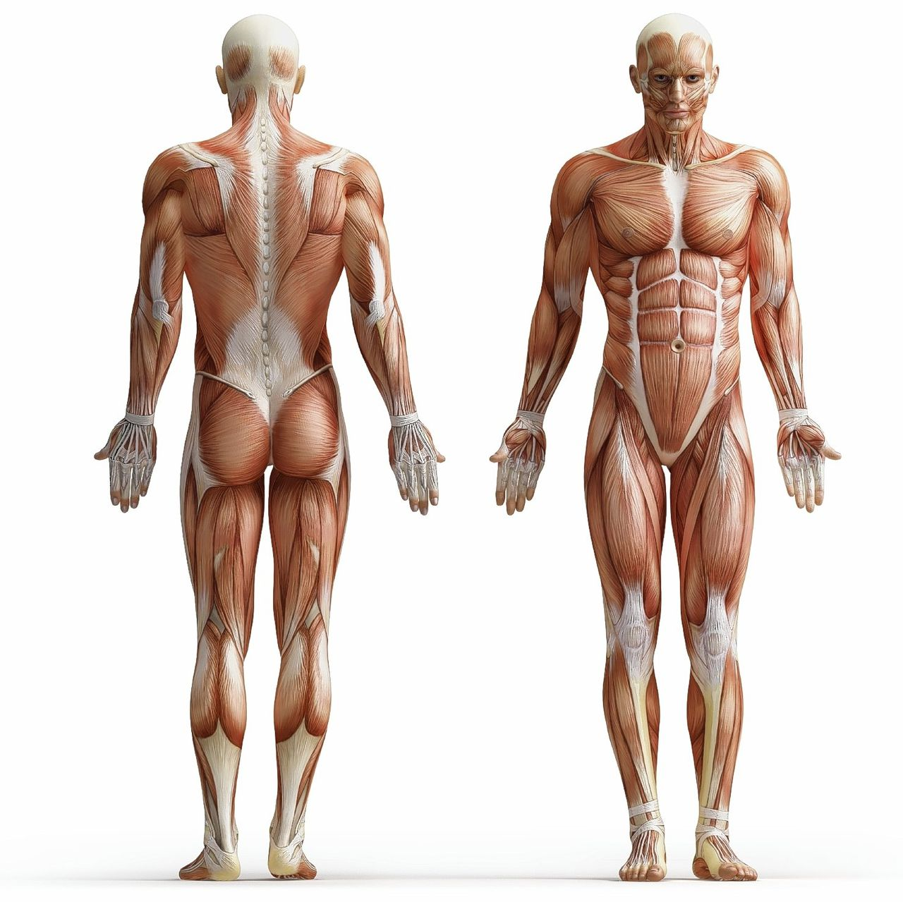

Wat is progressive enhancement?
Progressive enhancement is een methode die wordt gebruikt door webdevelopers waar progressief content wordt toegevoegd op een website. Deze strategie focust zich eerst op de content (HTML) en voegt de technische aspecten toe op de content.
De 3 lagen waar op gefocust wordt bij progressive enhancement zijn HTML, CSS en Javascript
De eerste laag is het 'skelet' van de website waar alle content in wordt weergeven. In dit voorbeeld heb ik gekozen voor een mens en in dit geval een skelet. De ruwe content is er, maar er mist nog interactie.
De tweede laag bestaat uit CSS. Door CSS toe te voegen onstaat er interactie op de website zelf en is het mogelijk de website op te maken. Voor dit voorbeeld heb ik gekozen voor het spierskelet van een mens. Het skelet zelf kan niet veel, pas wanneer wij een spierskelet toevoegen is het mogelijk om te bewegen en een vorm van interactie te hebben.
De derde en tevens laatste laag is de Javascript laag. De javascript laag is er om nog meer uit je website te halen en zorgt voor een nog betere bruikbaarheid van je website. Zo zorgt bij een mens de huid voor die extra bruikbaarheid als een constante lichaamstempratuur, vocht vast houden en nog meer 'kleine' enhancements die de spierskeletlaag niet kan verstrekken.